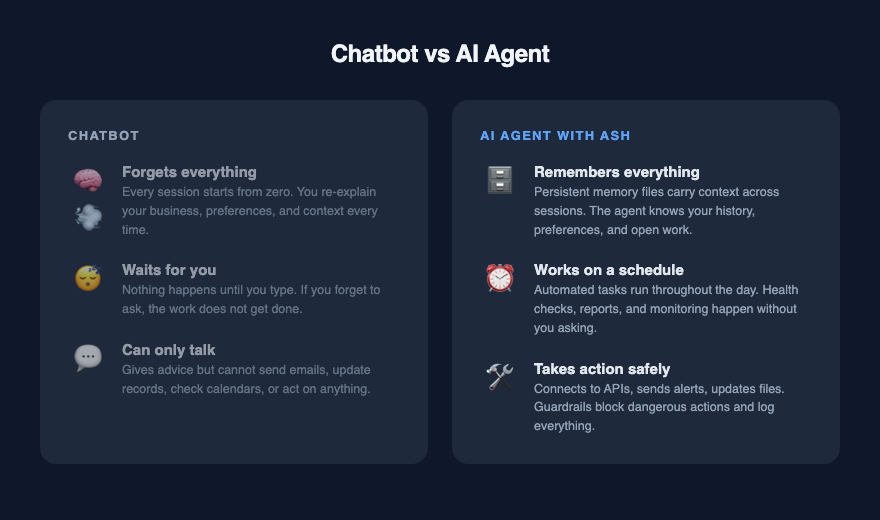

What is an AI Agent?¶
You have probably used ChatGPT or Claude. You type a question, get an answer, and move on. The next time you open the chat, the AI has no idea who you are or what you talked about last time. It starts fresh every single session.
That is a chatbot. Useful, but limited.
An AI agent is what happens when you fix the three things that make chatbots frustrating.

The three problems¶
Problem 1: It forgets everything. Close the chat and open it tomorrow. The AI does not know your name, your business, what you asked yesterday, or what it promised to do. You spend the first five minutes of every conversation re-explaining who you are and what you need.
Imagine hiring an assistant who shows up every morning with total amnesia. You would fire them by Wednesday.
Problem 2: It only works when you push it. A chatbot sits there waiting for you to type. If you forget to ask it to check something, it does not check. If you are busy all day, nothing happens. You are the engine. The AI is the passenger.
Imagine an assistant who never starts a task on their own. They sit at their desk doing nothing until you walk over and tell them exactly what to do, every single time.
Problem 3: It cannot touch anything. A chatbot can write text and answer questions. It cannot send an email, check your calendar, update a spreadsheet, or look up current information on the web. It thinks, but it has no hands.
Imagine an assistant who can tell you what to do but cannot do any of it. You still handle all the work yourself.
What an agent adds¶
An agent is a chatbot with three upgrades:
Memory. The agent saves notes about what happened. Tomorrow, it reads those notes before doing anything else. It knows who you are, what you are working on, and what it did last time. Over weeks and months, it builds up knowledge about your business, your preferences, and your past decisions.
A schedule. The agent wakes up on its own throughout the day. It checks on things, runs tasks, and reports back without you asking. Morning health checks. Afternoon reports. Overnight data processing. You set the rhythm once and the agent follows it.
Tools. The agent can reach out and do things. Send a message. Pull data from a service. Write to a file. Update a record. The specific tools depend on what you connect. The point is the same: the agent can act, not only advise.
What the harness does¶
This wiki documents the layer that makes those three upgrades work reliably. We call it ASH — the Agent Safety Harness.
The harness is not the AI itself. It is the system around the AI that handles the boring but critical problems: Where do the memory files live? How does the agent pick up context from yesterday? What happens if the AI tries to change something it should not? How do multiple AI models work together without stepping on each other? What runs on a schedule and what waits for a human?
Think of the difference between a car engine and a car. The engine is powerful, but without the chassis, steering, brakes, and dashboard, it sits on a bench doing nothing. The harness is everything that turns a powerful AI engine into something you can drive.
Your data stays on your device¶
When you use a chatbot through a browser, your conversations live on someone else's servers. The company behind the chatbot can read them, train on them, or change the rules at any time. You have no control over what happens to the information you share.
An agent built with ASH works differently. Your memory files, your state, your feedback corrections, your audit logs, your conversation history — all of it lives on your own machine. Nothing gets uploaded to a third party unless you connect a tool that sends data somewhere, and you choose which tools to connect.
If you unplug from the internet, your memory is still there. If you switch AI providers, your memory comes with you. If you decide to delete everything, you delete files from your own computer and they are gone.
This matters for anyone handling client information, financial records, medical notes, legal documents, or anything else you would not paste into a public chatbot. The AI model processes your request and forgets it. Your harness remembers, and your harness belongs to you.
Who this is for¶
You do not need to be a programmer to understand what ASH does or why it matters. The concepts apply whether you run a two-person consulting firm or manage a team of fifty.
If you have ever wished your AI assistant could:
- Remember what you discussed last week without being reminded
- Check your inbox every morning and flag the messages that need your attention
- Draft follow-up emails based on the notes from your last meeting
- Monitor a data source and alert you when something changes
- Run a weekly report and have it ready before you sit down Monday morning
Then you are describing an agent. This wiki explains how to build the system that makes it work.
Where to go next¶
If you want to see what people have built with these patterns, start with Implementations. It covers real examples from automated business operations to personal knowledge management.
If you want to understand the system design, start with How We Got Here for the story of how the harness evolved, then System Architecture for the technical overview.
If you want to understand one specific piece, use the navigation tabs at the top of the page. Each page stands on its own.